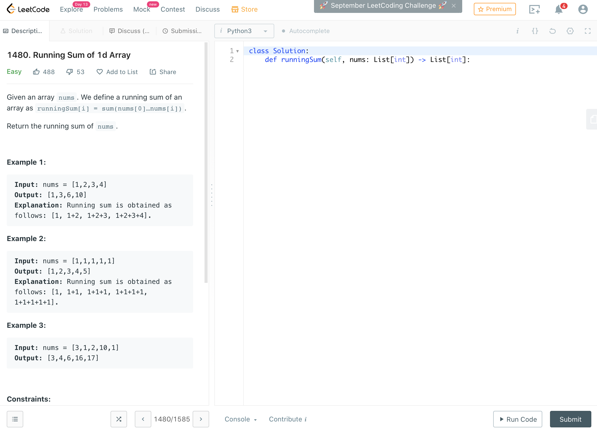

Introduction
Learning to code can be challenging, especially getting started. On the flip side, it can be challenging to know how to facilitate meaningful code education in groups, especially in this age of virtual meetings instead of doing things in-person. There are a lot of ways to go about it, including workshops, lectures, courses, open coding hours, and code reviews. Last week our group tried using the online platform LeetCode as a way to bring together our research site (all with different levels of programming skills) to learn some Python by solving a problem together. This was a different use of an hour, departing from our usual workshop style, but it ended up being really effective. This week we will discuss the problem-based approach to learning Python in a virtual group setting, and hopefully others can use this as a starting point for their own coding sessions.
Our virtual group code session followed a pretty simple agenda. We began with an introduction to some important Python concepts, then we broke into small groups (about 3-4 people) which all included at least one proficient coder (like a TA). After working together to solve the problem, we all came back and shared our findings. We were able to accomplish this all in an hour, but it was honestly a tight hour. If you expect a lot of question in the intro, or if you suspect the teams will need a lot of time, then you may want to allocate an hour and a half to be safe.
- Introduction to Basic Python Concepts - 20 minutes
- Problem Solving In Breakout Groups - 25 minutes
- Breakout Groups Present Their Learnings - 15 minutes
Starting With Basic Python Concepts
Because the group ranged from beginners to experts, we started with a brief introduction of some foundational Python concepts (variables, lists, and for loops) to help get us all on the same page. The PowerPoint presentation we used can be found here. This presentation was crafted to specifically cover all of the concepts required to solve the problem, with one key omission. Our introduction did not include the return function, which is required to obtain a successful output in LeetCode. In the introductory presentation, we mentioned the value of “Googling questions” and this prompted the groups to find the answer on their own. After concluding the intro and taking a couple questions, we broke into breakout groups to solve the problem.
Problem Solving In Breakout Groups
After the introduction to some basic Python concepts, we set out to solve our Python problem. We all attempted to solve LeetCode problem 1480, which is titled Calculating the Running Sum Of A 1d Array. After revealing the problem to the large group, we broke into breakout groups of 3-4 people. This can be challenging to do virtually, so make sure to check out your video chat capabilities ahead of time. We also made sure to have a dedicated lead for each breakout group, who was experienced with coding but mostly facilitated the problem-solving of the group, and making sure everyone gets the chance to participate. The LeetCode problem we chose was pretty straightforward and most groups were able to solve it in the time provided.

Screen shot of the LeetCode example we used. The problem is stated on the left, and the users can code on the right. All of the coding can be done in the right panel, which avoids issues with installations, dependencies, and the dreaded “Mac vs PC” battle.
During this session, we found that it’s important to focus on the learning and not just solving the problem. Solving a problem under time constraints can be stressful and this might encourage groups to rush through concepts instead of learning together, among other things. The goal of this is the journey, not the destination, so it was important for us to really focus on learning here.
Breakout Groups Present Their Learnings
After everyone regrouped, we all shared our learnings with each other. Again, it’s okay that not everyone reaches a solution. The focus on the group presentations was to share what was learned, and to provide some exposure of those learnings to the other groups. In the interest of time, we had one member present from each group, and each group both 1) showed their resulting code and 2) shared something interesting that they learned. This also showed that many different code approaches can be used to accomplish the same goal. We also collected the code from each group and provided it to everyone after, so that they can reference it again if needed.
Conclusions
This event was a different style for our big research group, but we had a lot of fun with it. By focusing on solving a problem together, we were able to all stay engaged, figure things out, and ultimately have a memorable experience. We also introduced everyone to the extensive LeetCode platform, which provides a lot of follow up problems for attendees to try when continuing to learn Python on their own. I would definitely recommend this approach for other research groups, especially those with large groups like ours (we are ~50 people total). Remember to have fun with it, and don’t hesitate to drop A question in the comment section below!
comments powered by Disqus